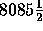

| Student Grants |
The Government of Impecunia has decided to discourage tertiary students by making the payments of tertiary grants a long and time-consuming process. Each student is issued a student ID card which has a magnetically encoded strip on the back which records the payment of the student grant. This is initially set to zero. The grant has been set at $40 per year and is paid to the student on the working day nearest to his birthday. (Impecunian society is still somewhat medieval and only males continue with tertiary education.) Thus on any given working day up to 25 students will appear at the nearest office of the Department of Student Subsidies to collect their grant.
The grant is paid by an Automatic Teller Machine which is driven by a reprogrammed  chip originally designed to run the state slot machine. The ATM was built in the State Workshops and is designed to be difficult to rob. It consists of an interior vault where it holds a large stock of $1 coins and an output store from which these coins are dispensed. To limit possible losses it will only move coins from the vault to the output store when that is empty. When the machine is switched on in the morning, with an empty output store, it immediately moves 1 coin into the output store. When that has been dispensed it will then move 2 coins, then 3, and so on until it reaches some preset limit k. It then recycles back to 1, then 2 and so on.
The students form a queue at this machine and, in turn, each student inserts his card. The machine dispenses what it has in its output store and updates the amount paid to that student by writing the new total on the card. If the student has not received his full grant, he removes his card and rejoins the queue at the end. If the amount in the store plus what the student has already received comes to more than $40, the machine only pays out enough to make the total up to $40. Since this fact is recorded on the card, it is pointless for the student to continue queuing and he leaves. The amount remaining in the store is then available for the next student.
Write a program that will read in values of N (the number of students,
1  N
N  25) and k (the limit for that machine, 1
25) and k (the limit for that machine, 1  k
k  40) and calculate the order in which the students leave the queue.
40) and calculate the order in which the students leave the queue.
Input will consist of a series of lines each containing a value for N and k as integers. The list will be terminated by two zeroes (0 0).
Output will consist of a line for each line of input and will contain the list of students in the order in which they leave the queue. Students are ordered according to their position in the queue at the start of the day. All numbers must be right justified in a field of width 3.
5 3 0 0
1 3 5 2 4